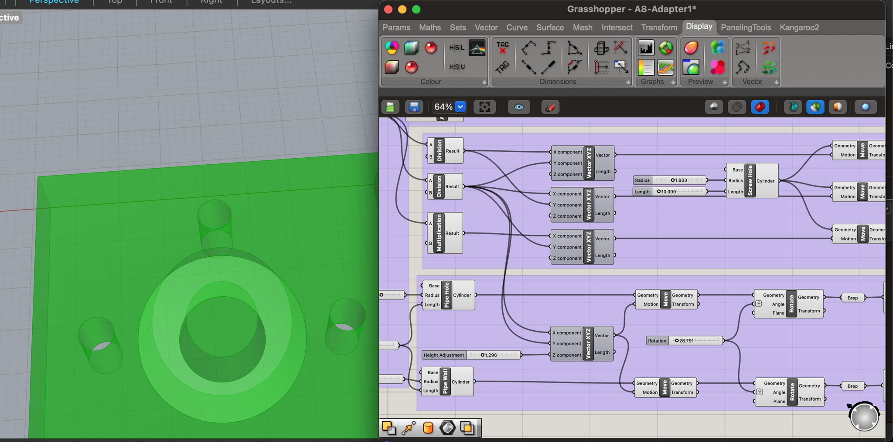
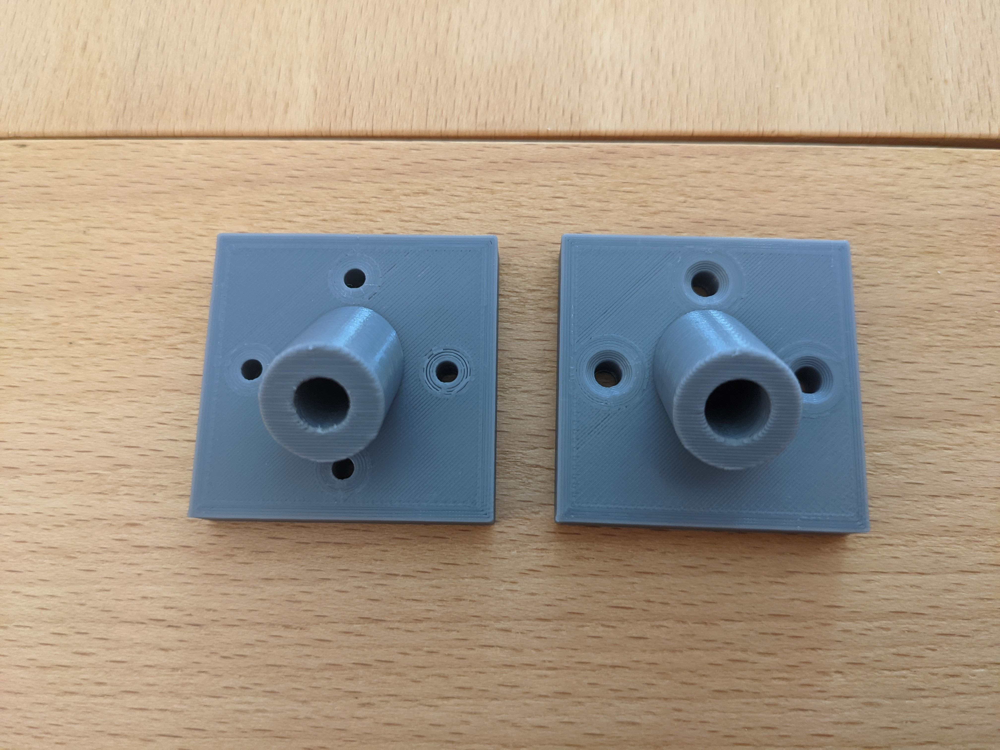
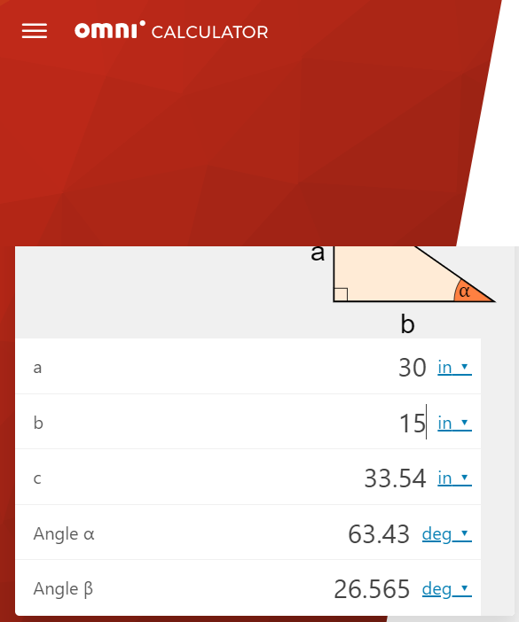
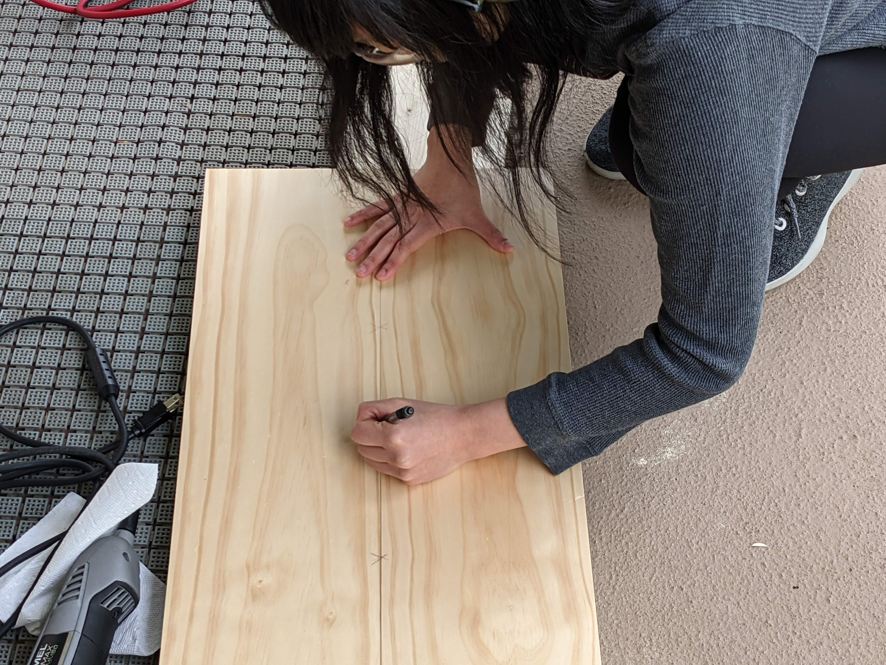
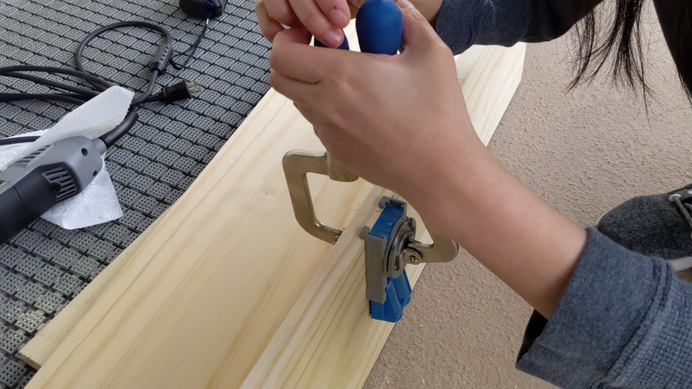
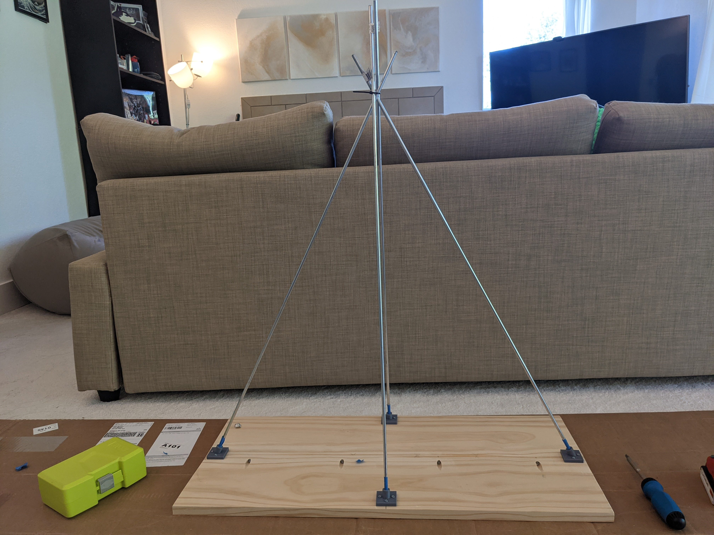

After 8 weeks of Digital Fabrication class, it was time to put my skills to the test!
The first step of building the snowboard holder was to design the adapter connecting the wooden base to the rods of the quad mount.
In Grasshopper, I created the adapter with several screw holes and an extended tube that accepted the rod.
It was designed so I could easily adjust the screw hole & extended tube size as well as the angle of the tube...
Since as I've learned through this class, what is designed/measured is not always what is printed.

As expected, I had to iterate through the adapter with each time tweaking the design.
Given how small the adapter was, it only took ~1 hour to print, so I was able to rapid prototype without too much worry.
For my first version, I designed the adapter with four screw holes with the same diameter as the screw shaft, plus a tube with same diameter as the rod, at 1/4".
Unsurprisingly, both the screw holes and tube hole were too small for the screws and rod, respectively.
For the next version, I adjusted the screw and tube holes just a bit larger.
I also went from four to three screw holes because I wouldn't have been able to screw in the fourth hole, since the tube was in the way.
At Anthony's request, I also created chamfers for the screw holes, so that the wood screws would be flush with the surface. I was already frustrated with Grasshopper at this point, so I ended up creating the chamfers using cones and "BooleanDifference" in Rhino

With some minor tweaking, the screw holes were good to go; however, for some reason, I had problems with designing the right size hole tube to accept the rods.
Instead of spending hours playing around with different radii, I decided to just print out the tube hole.
It took less than a minute to print out, meaning I was able to print, test and fine tune the tube hole really quickly.
I finally was able to print a hole size that fit with the rod pretty well.
It was time to move on to strength testing. Given that these rods were going to be the strength and support for the snowboards, they needed to be strong!
Using the excess wooden plank I purchased for the base, I screwed in the adapter, attached the rod, and twisted it in various ways.
With 20% infill, the printed adapter was too weak because not enough material was holding together the tube and the base when applying pressure.
The snap sound was real quick and clean. Ouch!
Sooooo, I had to up my infill BY A LOT. I went from 20 to 80%.
I also increased the wall thickness around the holes by quadruple, which I think helped strengthen the area around the holes.
With these changes, there were notable strength differences in this version.
I had to use a ton of force, probably more than needed, to cause any stress markings to the adapter.
I was happy with the latest version of the base adapter.
To round off my base adapter adventures, I needed to dust off the geometry math I learned in middle school to determine the right angle/length.
Needless to say, I struggled remembering soh-cah-toa/sin-cos-tan. Luckily, Google is my best friend.
I was able to find a calculator and plug in all my measurements to get the correct calculations.
Finally, I used those calculations to determine the tube angle on the base adapter.

In reflecting on the process, I have to give a shout out to my consultant/collaborator, Anthony.
He gave some great suggestions - e.g., chamfers (for aesthetics), printing just the hole vs. entire adapter (to save time), etc.
Here is my final lineup of all the iterations and versions of my base adapter!
Now onto the next step of the process, which admittedly has less to do with digital fabrication.
The base I aimed for was 14" x 32", and with the 1x8 I purchased, I needed to cut them down and bring them together.
Using an oscillating tool with a wood blade, I cut the boards down to 32".
Next, I brought the two boards together.
I marked the boards to help me determine where the two boards needed to meet.

Then, I clamped one of the boards down with a joint angle tool.

Using a power tool, I drilled holes into the board in preparation for screwing them together.
This would support with holding the two boards together, while the wood glue dries.
With the boards together, I inserted wooden screws into the holes I drilled.
This allowed the boards to be held together, while the glue was working its magic!
I sanded, smoothed and buffed out any rough edges.
In particular, the heights between the two boards were not exactly even.
So I had to level them out in order to screw in my base adapter.
I placed the uncut rods into the base adapter to test how things were looking.
Either due to friction, weather, or something, the rods were somewhat loose.
I added some tape to artifically increase the diameter of the rods.
And added a zip tie, just cause.

It was now time to transition to the top of the mount.
I started by designing the top adapter, which needed to accept the four rods...
Which also allowed for two horizontal, parallel rods.
This part was pretty straightforward because I had already "math"-ed out everything earlier.
Plus I reused a good portion of my previous Grasshopper file to create it.